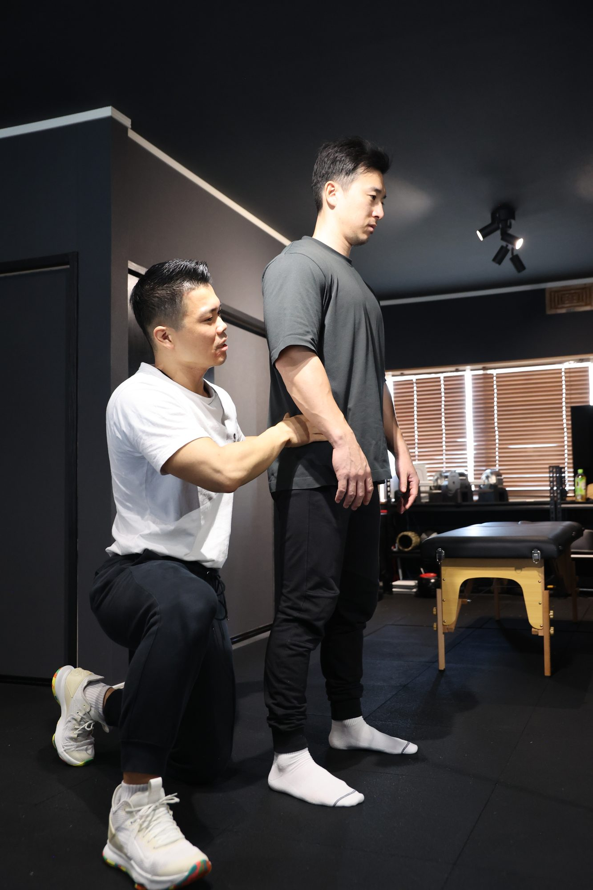
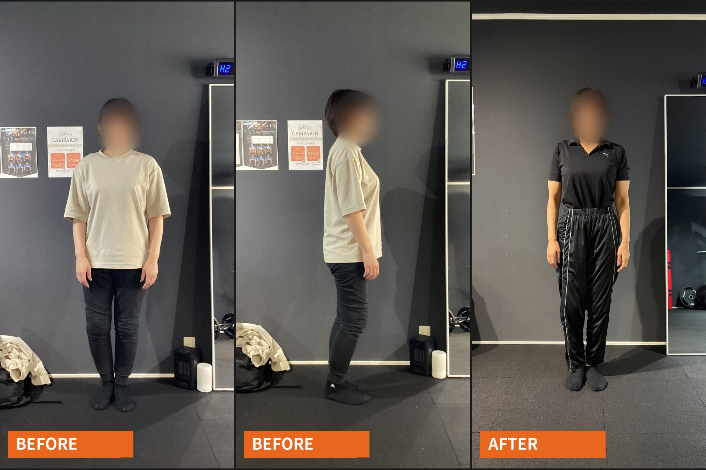
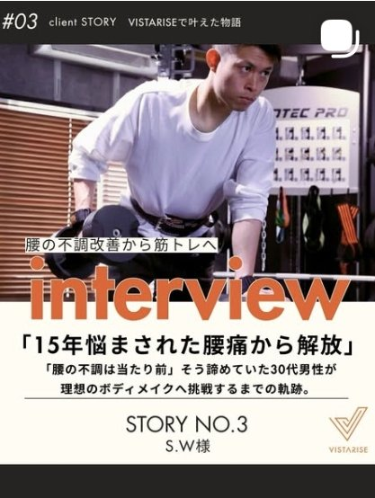
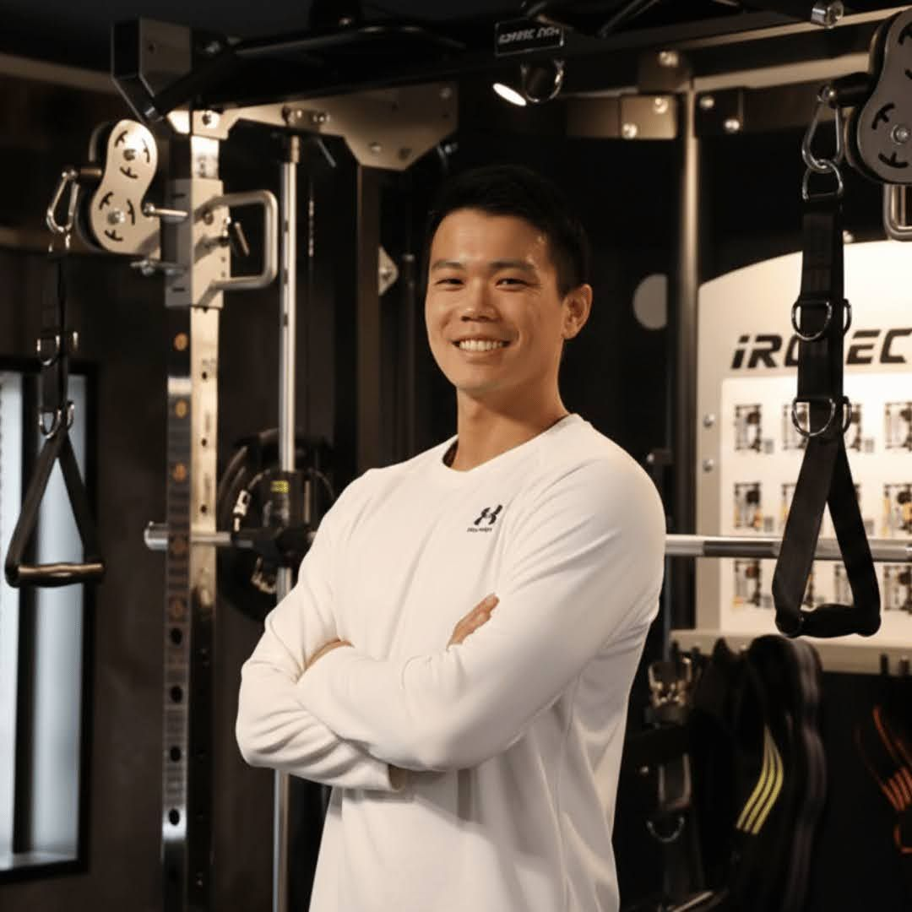
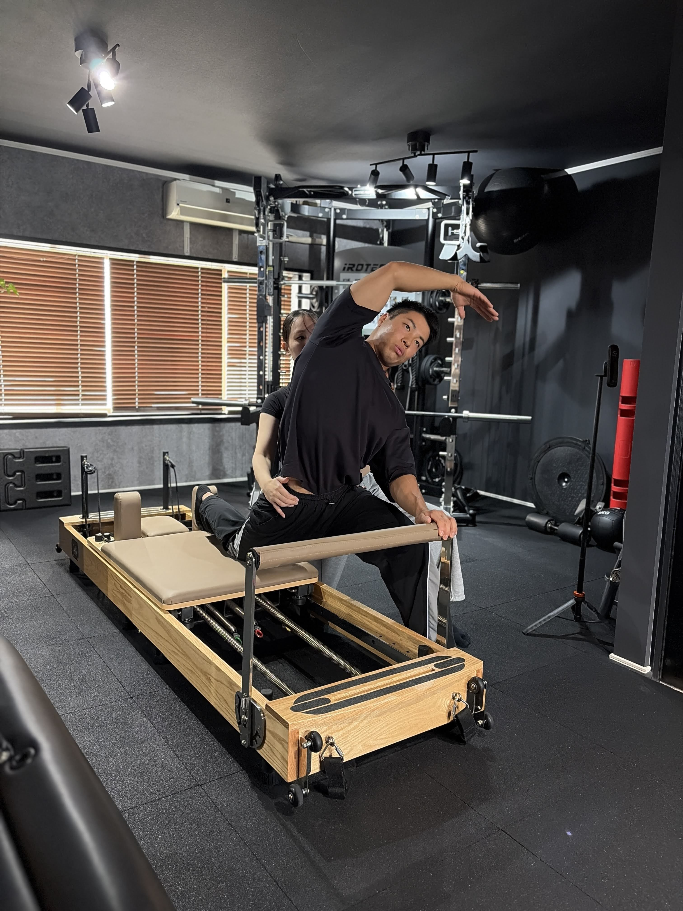

医療機関での医師・療法士と連携したトレーニング指導6年。痛みの原因から整えるので、腰や膝に不安があっても始められます｜新潟市中央区のパーソナルジム

姿勢と動作のチェックで、痛みや痩せにくさの原因を見つけます。
解剖学にもとづき、一つずつ丁寧に伝えます。
「食べて痩せる」で、リバウンドを防ぎます。
人生を上昇（RISE）させるための「土台（機能）」を設計し、お客様が望む未来（眺望/VISTA）を共に目指し続ける
毎日を前向きに過ごすための土台は、よく動く身体です。あなたが思い描く未来（VISTA）に向かって、身体の土台づくりから一緒に歩み続けます。

毎日の洋服選びを楽しめる身体へ。
前十字靭帯（ACL）の手術を4度経験し、小走りもできない状態からスタート。膝関節の機能回復とトレーニング復帰をサポートしながら、食事の質を整えて「食べて痩せる」を実践しました。
・小走りができるようになった
・階段の上り下りが軽快に
・体重−6.1kg、体脂肪率32.0%→24.5%（筋肉量は維持）
※効果には個人差があります
体重−5.6kg、体脂肪率−4.3%。
※効果には個人差があります

（30代男性・S.W様）
15年以上続く腰痛と繰り返すぎっくり腰に悩まれていましたが、徹底的な身体評価で根本原因にアプローチ。半年間の二人三脚のトレーニングを経て、「多忙でも腰が痛まない身体」を手に入れました。現在は痛みの不安から解放され、将来のための筋力アップに意欲的に取り組まれています。
※効果には個人差があります
※効果には個人差があります
40歳を超え肉体の衰えを感じて改善したいと思い、人生で初めてのパーソナルジム通いをしています。
特にデスクワークが続くと首肩周りの不調を感じる事が増えてきて、しんどいなと感じておりました。
通い始めてまだ4週間ですが、朝起きた時の身体が軽くなり、身体と意識の変化を実感しています。
最初は丁寧なヒアリングから始まります。
生活習慣や現在の身体の状態を一緒に整理し、その内容をもとに食事や日々のトレーニング方法を、一人ひとりに合わせて提案してくれます。
何よりも、今の状態と合わせて未来の具体的な目標を設定してもらえるので、【現状】→【未来の自分】という理想のイメージを自分自身が明確に描く事ができます。
未来の自分を具体的にイメージできることで、日々のトレーニングへのモチベーションも自然と高まります。
「これがパーソナルトレーニングに通う価値の一つなのだ」と、通ってみたからこそ実感できます。
元々ヨガが好きでYouTubeを見ながら自宅でやっていました。
今まで何度もやっていたポーズなのに、しっかり指導してもらうとこんなにも特定部位への意識の違いや、効果の高さに本当に驚いています。
アスリートの方はもちろんですが、私のように日々の疲労感や身体の不調を根本から改善したいと考えている方には、ぜひ一度体験してみてほしいです。
迷っている方は、まずは体験レッスンに参加されてから検討してみてはいかがでしょうか。
ジムには通っていましたが、何をどうすれば良いか分からずモチベーションも上がらないままダラダラと継続していました。そこで姿勢改善と体づくりをしたくて通い始めました。
2ヶ月ほどで重かった肩こりの症状がなくなり、整体通いもしなくて良くなりました。
食事指導も「もっとタンパク質を取って摂取カロリーも増やしてください」という内容を提案してくれて体の内側から変えてくれます。
トレーニングもパフォーマンスアップに必要なトレーニング多岐にわたり教えてくれます。
正しいフォームで低負荷のトレーニングを丁寧に行う癖がついてきました。今では高いモチベーションでのジム通いが習慣化しています。
くにちゃんの卓越した理論と励ましのおかげです。オススメのジムです。
学生時代の部活動より前十字靭帯を２度断裂しこれまで手術も4回しました。定額制ジムにも通ったものの、膝が痛くどんなトレーニングがいいかわからず、気づけばバイクを漕ぐだけでした。
お試しと思い体験したところ、今まで無意識に膝を庇って全身を効率よく使えていないことがよくわかり目から鱗でした。
その日で入会しトレーニングを重ねることで、身体が動けることを実感しています。特に怪我をしてから、痛すぎて力の入らなかった膝でしたが、掴まりながらも片足立ちスクワットができた時には感動しました。まだ1ヶ月ほどですが、身体の動きが変わっていくことが楽しみでなりません。正直、BISTARIZE 藤田さんに出会うまでは、自分の身体に諦めていました。勇気を出して伺うことができて本当によかったです。
これからもよろしくお願いします！
Googleの口コミより（原文のまま）

代表トレーナー くにちゃん。医療機関での医師・療法士と連携したトレーニング指導6年で培った知識で、痛みや不安のある方にも、一人ひとりの身体に合わせて向き合います。
通常60分のところ、体験は90分。
姿勢・動作のチェックで「なぜ痩せにくいのか」「なぜ痛むのか」の原因を見つけ、あなたに合った進め方をご提案します。
目標・お悩み・生活習慣をお聞きします
身体のクセや硬さ、弱いところを評価します
あなたに合った運動を実際に体験します
評価の結果をもとに、今後の進め方をご提案します
90分
60分（1回あたり）
30分／月2回 10,000円〜

ピラティスのインストラクター（女性）による、マンツーマンのリフォーマー（マシン）ピラティスです。
しつこい勧誘は一切ありません。体験レッスンの最後に、お身体の評価結果をもとに今後の進め方をご提案しますが、その場で決めていただく必要はありません。ご自宅でゆっくり検討してから、ご連絡いただければ大丈夫です。
まったく問題ありません。通っている方の多くが、運動初心者や久しぶりに運動を始める方です。最初に姿勢や身体の動きをチェックし、今の体力やお身体の状態に合わせたメニューから始めるので、無理なく続けられます。
はい、受けていただけます。トレーナーは医療機関での医師・療法士と連携したトレーニング指導6年の中で、痛みや不調を抱える方の身体と向き合ってきました。体験レッスンでは、まず痛みの出る動きや原因をていねいに確認し、お身体に負担のかからない内容から始めます。
なお、通院中の方や手術後の方は、主治医の先生に運動をしてよいかご確認のうえでお越しください。症状によっては、医療機関の受診をおすすめする場合もあります。
はい、完全個室です。他の利用者の目を気にすることなく、マンツーマンでトレーニングに集中していただけます。「ジムの雰囲気が苦手」「人前で運動するのは恥ずかしい」という方も安心してお越しください。
パーソナルトレーニングは男性トレーナー（代表）が担当しております。ピラティスは女性インストラクターが担当しておりますので、女性の指導を希望される方はピラティスもご検討ください。完全個室で、ご不安な点は事前にInstagramのDMからご相談いただけます。
ジムの敷地内に無料駐車場がございます。お車でもお気軽にお越しください。
はい、更衣室がございます。お仕事帰りや学校帰りでも、着替えてからトレーニングを始めていただけます。
動きやすい服装、室内用の運動靴、飲み物、タオルをお持ちください。更衣室もございますので、お仕事帰りなどにお着替えいただくことも可能です。